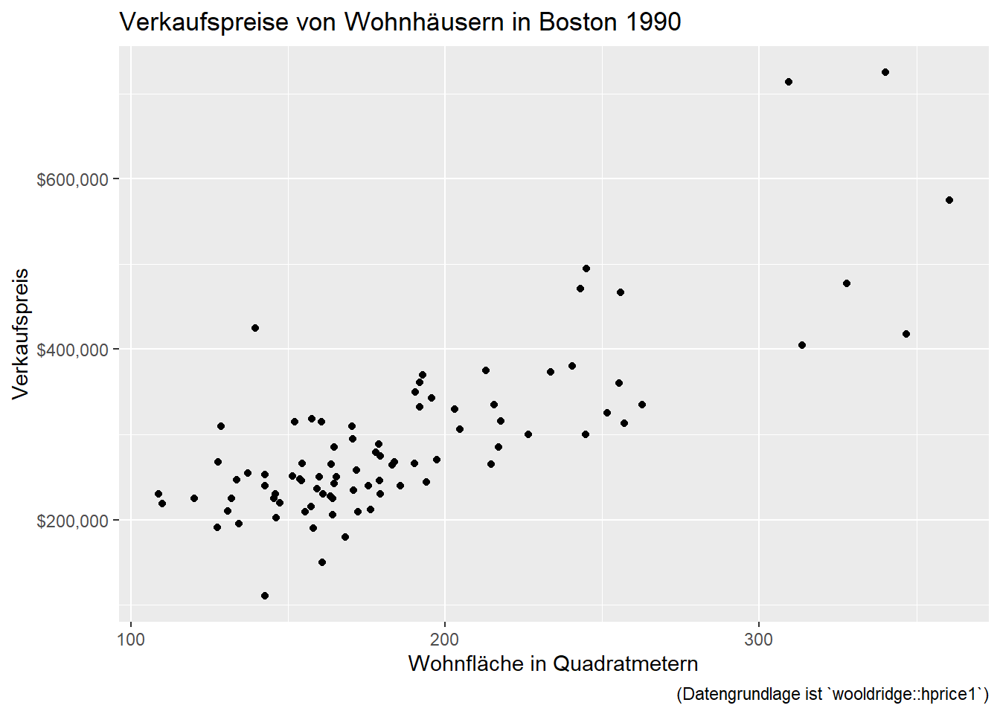
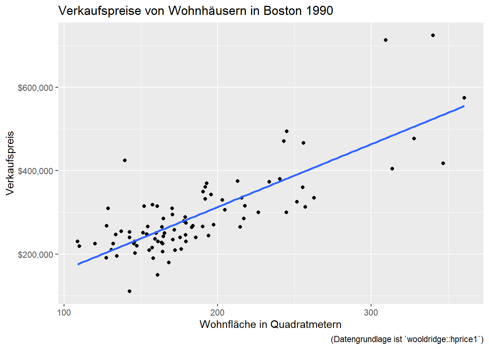

Einfache Regression
Wir möchten die Beziehung zwischen zwei Merkmalen verstehen. Zum Beispiel: Welchen Einfluss hat die Wohnfläche auf den Wert eines Hauses? Dafür brauchen wir Daten. Zum Glück haben wir einen Datensatz vorliegen mit Verkaufspreisen von Häusern in Boston 1990:1 preis ist im Datensatz der Verkaufspreis in Dollar, wohnflaeche die Wohnfläche in Quadratmetern, schlafzimmer die Anzahl an Schlafzimmern und grundstueck die Grundstücksfläche in Quadratmetern.
Wir konzentrieren uns zunächst nur auf die Wohnfläche und die damit verbundenen Verkaufspreise. Ein Streudiagramm der Daten sieht so aus:

Da scheint es einen Zusammenhang zu geben: Wenig überraschened haben Häuser mit einer größeren Wohnfläche einen höheren Verkaufspreis erzielt. Wir fragen uns jetzt:
Um wie viel Euro steigt der Wert eines Haus mit einem zusätzlichen Quadratmeter an Wohnfläche?
Und was ist wohl der Wert unseres eigenen Hauses mit einer Wohnfläche von \(x\) Quadratmetern?
Die Antworten kann uns ein Modell liefern.
Was für ein Modell?
Da gibt es verschiedene Möglichkeiten, aber eine naheliegende Idee für den Anfang ist ein lineares Modell der Form
\[\begin{equation} \text{Verkaufspreis} = \beta_0 + \beta_1 \text{Wohnfläche}. \end{equation}\]
Das Modell berechnet also den Verkaufspreis, indem die Wohnfläche mit einem Koeffizienten \(\beta_1\) multipliziert und der Koeffizient \(\beta_0\) addiert wird - eine klassische, lineare Funktion. Grafisch sieht das zum Beispiel so aus:

Ich habe \(\beta_0 = 11000\) und \(\beta_1 = 1500\) gewählt, damit die blaue Linie möglichst gut durch die Punkte führt. Wir bekommen hier schon die erste Vorstellung, dass ein zusätzlicher Quadratmeter an Wohnfläche den Wert des Hauses um \(1500\) Dollar anhebt, und dass ein Haus mit \(300m^2\) Wohnfläche circa \(11000 + 1500 \cdot 300 = 461000\) Dollar Wert sein könnte.
Es gibt aber noch etwas zu beachten:
Die Werte für \(\beta_0\) und \(\beta_1\) habe ich geraten. Das ist ungenau, wir wünschen uns ein Verfahren mit denen diese Werte aus den Daten berechnet werden können.
Die Datenpunkte weichen von unserer linearen Funktion ab, der Verkaufspreis kann also nicht exakt durch die Wohnfläche bestimmt werden. Unser Modell braucht also noch eine Ergänzung, die mit Messfehlern umgehen kann.
Fußnoten
Zugegeben, die Daten sind alt und wahrscheinlich nicht repräsentativ für Deutschland, aber für eine Demonstration genügen sie.↩︎